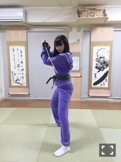
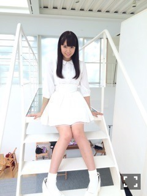
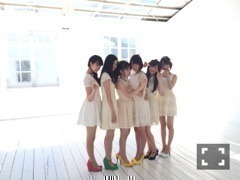

| 2015/10 12 Mon | ひめたん-0o0-その580 |

アンダーライブ本番まであと少し！
半年ぶりのアンダーライブ
楽しみだなあ(´｡•ω•｡`)
来てくれる人はよろしくね！
ハズレちゃったよって人が今回
ものすごく多いと聞いています。
日記で良い報告できるように頑張るよ！
ライブのおさらいしまーす
まず、今回は
渋谷AiiAシアターです！
六本木ではないのでお間違いのなきように！
サイリウム、
ひめたんしかーの人は是非
ぴんく
×
ぴんく
推奨！
コールは＼
ひめたーん
／がいいかな！
ひめたんTシャツ大歓迎。
タオルやうちわは
周りの方にぶつからないように
さりげなくアピールしてくれたら
嬉しいです♪
ステージから客席までの距離が
めちゃめちゃ近いのも
アンダーライブならでは。
もうツインテールはしてないですが
それでも見つけてくれたら嬉......
いやさすがに近いから大丈夫かな♡
会場のみなさんと一緒に
素敵な公演にしたいなと思ってます
よろしくお願いします( ˇωˇ )～＊
＊10/6 TopYell

連載中の
「乃木坂46・中元日芽香の挑戦‼︎」
第2回は忍術を学んで参りました
タイトルに自分の名前が入ってるなんて
いや～改めて凄いことだよなぁ。
護身術や忍者さんくノ一さんの考えなど
短い時間ではありましたが
アイドル生活、日常生活で勉強になることが
あって貴重な体験でした！
＊10/9 UTB+


サンクエトワールの5人で
裏表紙と紙面でのグラビアを
撮っていただきました！
グラビアの設定は
この5人が乃木坂ではないひとつの
アイドルグループだったらという空想。
インタビューも5人の関係性とか
普段の感じが伝わるページでした♪
＊10/9 ボム

中田、堀、鈴木、佐々木、渡辺、中元
真っ白なワンピースを着て
いろんな表情を撮ってもらってませ
パンプスとリボンは
6人のサイリウムカラーです。可愛い！
1期生2期生混合の
珍しい組み合わせだと思います
こちらもインタビューたっぷり。
相関図も楽しいよ(^o^)
＊10/9 ファインボーイズ
永島・北野と3人で載ってます♪
自分のバッグ、私物紹介ページ。
この日の衣装のスニーカー可愛かったから
自分でお店行ってゲットしちゃった♡
さらに、告知です！
10/20発売のミラクルジャンプに
サンクエトワールが表紙で登場！
ミラクルジャンプの表紙を
3次元のものが飾るのは
(で、表現あってるかな？)
この号がはじめてなんだとか。
ヤングジャンプにも登場する予定です！
日曜の夜はらじらー！サンデー
次回、乃木坂から
若月佑美ちゃんが登場します！若様～♡
22時台はキャラボイス対決ですって。
詳細は番組ホームページを
チェックしてみてください！
若月への応援メッセージはもちろん
レギュラーコーナーや
リクエストソングもお待ちしております
おたよりの宛先はこちらから↓
http://www.nhk.or.jp/radirer/
生写真をかけた
パーソナルクイズのコーナーもあるよ！
スタジオと生電話繋いじゃうよ♡
「大人への近道」もかける予定......。
おっと、18日は
握手会からのラジオなんだね！！
ひめ充な1日だね(´,,•ω•,,｀)
18日の個別握手会では
ハロウィンだから今年も仮装やるよ～
もう決めました。
お洋服も届きました。
さて何でしょうか～？♡
あ！そうそう！
蘭世とごはん行ったよ～＼(^o^)／
ずっと約束してたからね！
次はサンエトちゃんのみんなで行こう！
(＊´・ω・＊)
コメント(1057)
2015/10/12 00:00